Como instalar o Node.js no Windows, Linux e macOS
Para a instalação do Node, começaremos acessando a página de download do Node.js.
Instalação no Windows
Estaremos utilizando a versão LTS (Long-term support, ou suporte de longo prazo, em português), por ser mais estável. Versões Current podem apresentar bugs, por estarem em desenvolvimento.
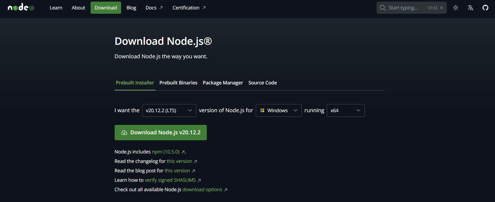Clicando na opção Download Node.js v20.12.2, será iniciado o download automático do pacote instalador, como está representado na imagem abaixo:
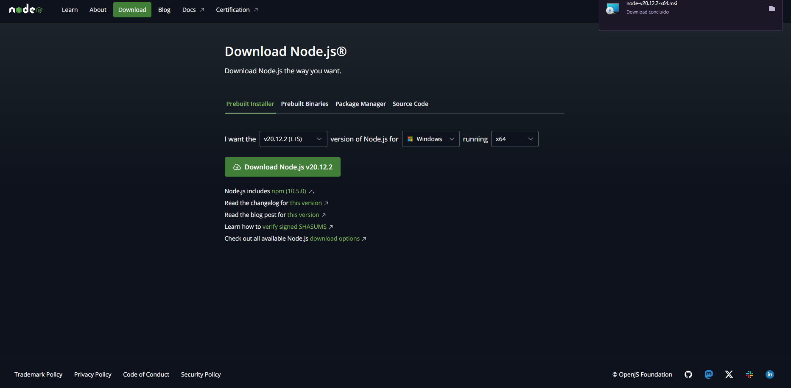Ao ser concluído o download, basta clicar no instalador que foi baixado para executá-lo. A imagem abaixo será exibida e prosseguiremos clicando em Next:
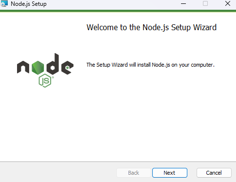Depois de clicado em Next, será exibida os termos de licença. Basta clicar no checkbox concordando com os termos e depois em Next.
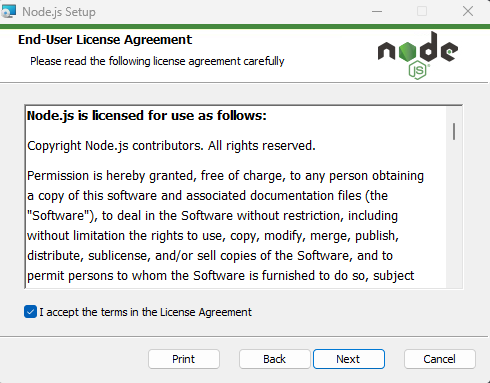Após ter clicado em Next, na tela seguinte aparecerá o local onde o Node será instalado. Vamos optar pelo caminho padrão.
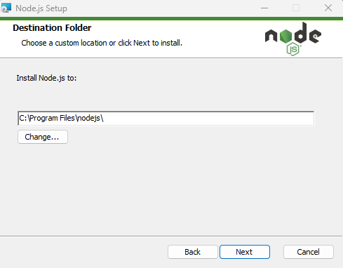Selecione Next e na tela seguinte escolheremos as funcionalidades do Node para serem instaladas. Recomenda-se que sejam todas instaladas, sem alteração.
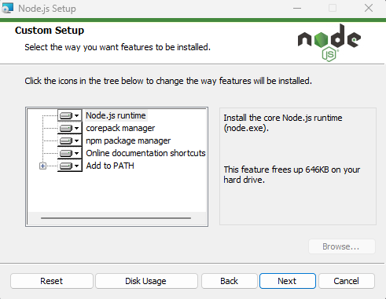Em seguida, vai aparecer a opção de instalar as ferramentas para módulos nativos. Vamos selecionar a checkbox para que seja feita a instalação automática das ferramentas nativas, inclusive do Chocolatey, que é um gerenciador de pacotes para o Windows que vem para facilitar o processo de atualização e download dessas ferramentas através da linha de comando. Em seguida clicamos em Next:
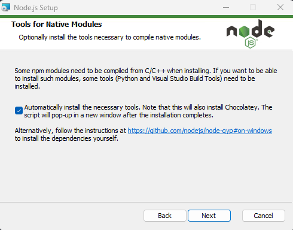Basta agora clicarmos em Install, que aparecerá na tela o precesso de instalação. Pronto, seu Node está instalado. Para garantir que a instalação esteja bem sucedida e que foi escrito corretamente no PATH, é interessante reiniciar a máquina. Tenha certeza que a instalação terminou antes de reiniciar o sistema.
Por fim, para averiguar se a instalação ocorreu de forma correta, abra o Prompt de Comando e digite os seguintes comandos:
- node --version;
- npm --version.
Esses que, por sua vez, irão apresentar as respectivas versões do Node e NPM instalados na máquina, conforme a imagem abaixo:
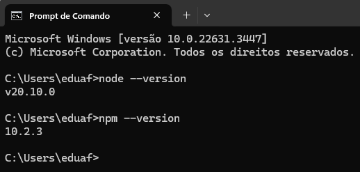Assim, concluímos a instalação do Node.js em um Sistema Operacional Windows.
Instalação no Linux (Ubuntu)
Para instalação do Node.js versão LTS no Linux Ubuntu, deve-se digitar os seguintes comandos:
- curl -fsSL https://deb.nodesource.com/setup_lts.x | sudo -E bash -
- sudo apt-get install -y nodejs
Depois de rodar os comandos, a tela ficará dessa forma:
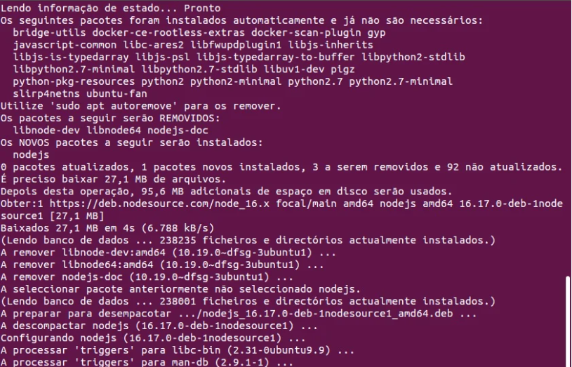Com essa ação, o Node está instalado. Para certifcar sua instalação, digite os mesmos comandos anteriormente citados:
- node --version;
- npm --version.
Irá então aparecer as devidas versões do Node e NPM, respectivamente:
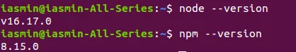Pronto! concluímos a instalação do Node para o Sistema Operaional Linux.
Instalação no macOS
Para instalarmos o Node no macOS, o processo é bem similar ao do Windows, pois utiliza pacotes para instalação.
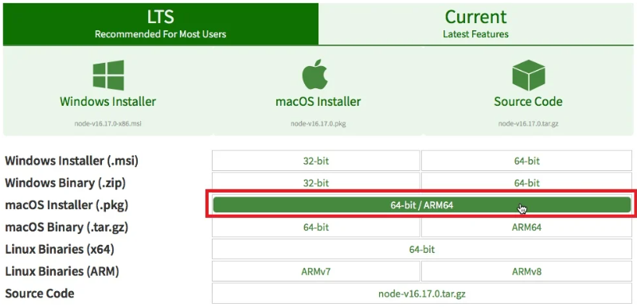Ao selecionar a opção, o instalador será baixado e, ao clicar, iremos executar. Clicaremos em Continue, lembre-se de aceitar os termos de uso.
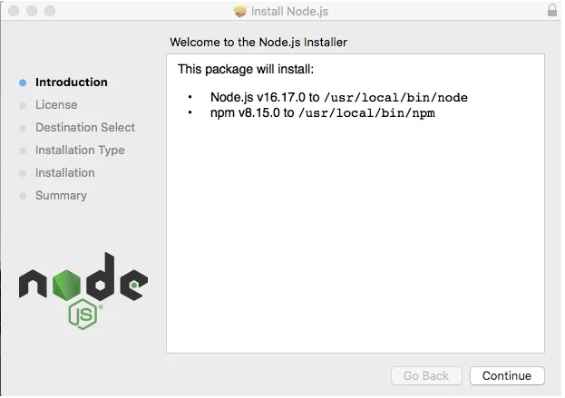Após clicar em Continue, teremos a seguinte tela:
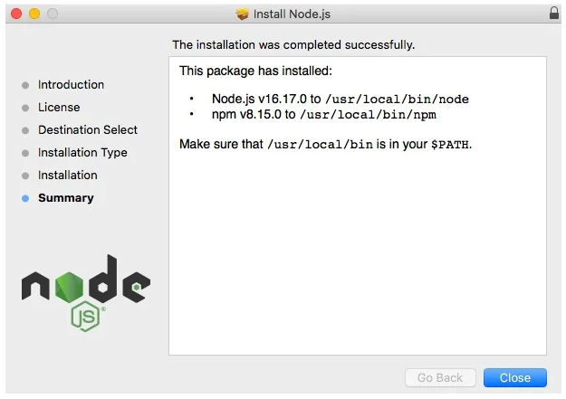Agora, clicaremos em Close e iremos conferir se o Node e o NPM foram instalados corretamente. Os comandos são os mesmos:
- node --version;
- npm --version.
Posteriormente, aparecerá as versões do Node e NPM, respectivamente, instalados.
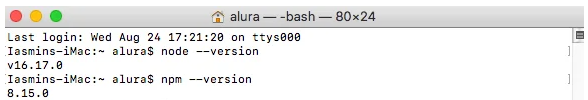Pronto! Seu Node.js está devidamente instalado para o Sistema Operacional macOS.